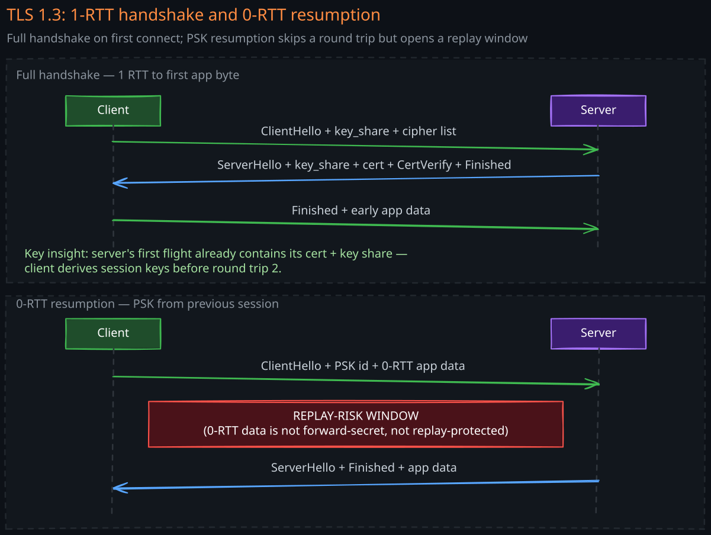
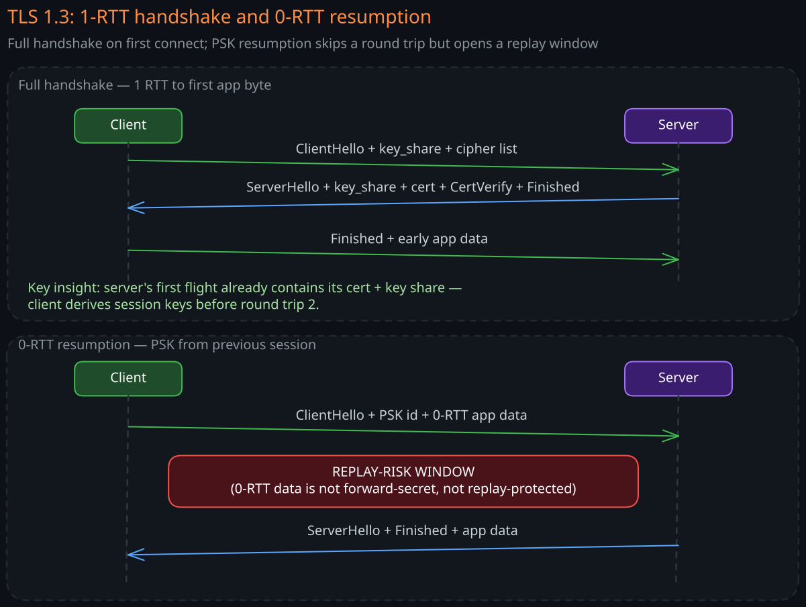
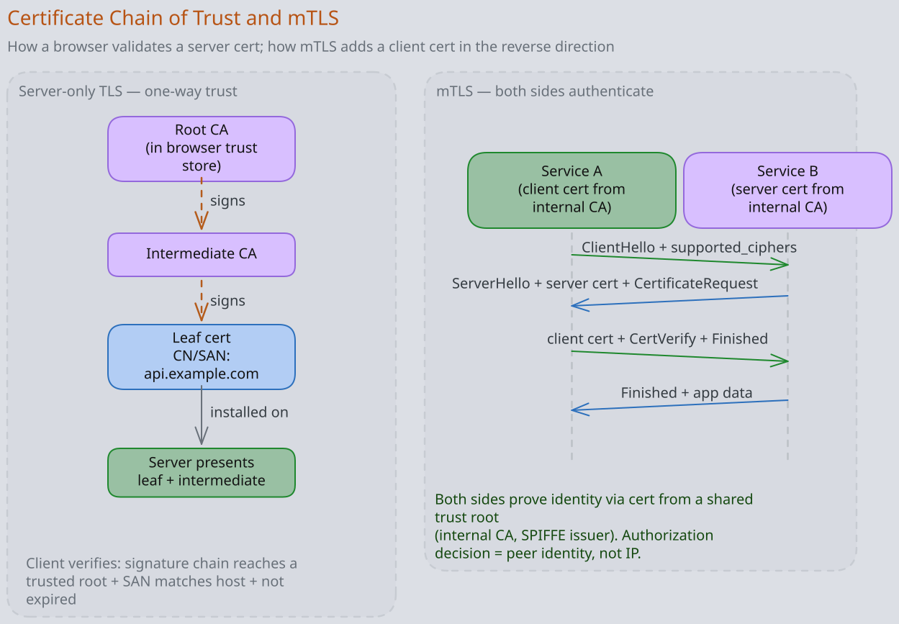
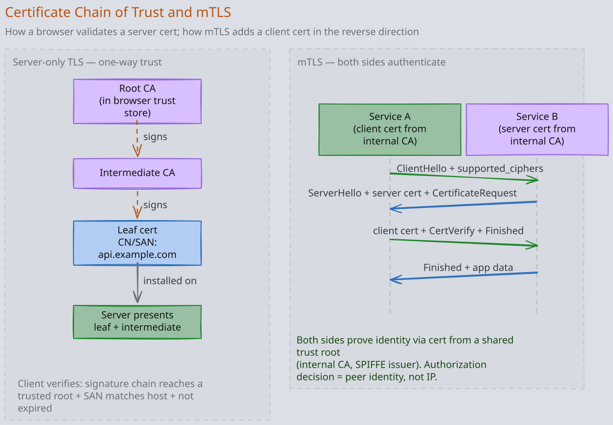

TLS is the encryption and authentication layer that sits between TCP (or QUIC) and the application. Every HTTPS connection, every gRPC call, every database connection that crosses a trust boundary terminates a TLS handshake. Staff engineers must be able to reason about what the handshake actually proves, what its failure modes look like at scale, and when mutual TLS is the right tool instead of bearer tokens.
1. What TLS Proves
A successful TLS handshake establishes three things between client and server:
- Confidentiality: bytes on the wire are encrypted under an AEAD cipher (AES-GCM, ChaCha20-Poly1305) that an observer cannot read or tamper with undetected.
- Integrity: every record is authenticated; flipping one bit fails the AEAD tag and tears the connection down.
- Identity: at least one side has proven possession of a private key whose public key is bound, via a chain of certificate authorities the other side trusts, to a name (DNS name, SPIFFE ID, etc.).
Plain “TLS” with server-only authentication proves server identity to the client. mTLS (mutual TLS) additionally proves client identity to the server. Anonymity of one or both sides is technically possible but never deployed in practice.
For background on the cryptographic primitives used inside TLS see Cryptographic-Primitives and Cryptography-Authentication.
2. The TLS 1.3 Handshake
TLS 1.2 took 2 RTTs to set up. TLS 1.3 cuts that to 1 RTT (and 0 RTT on resumption) by making the client speculatively pick a key share in its first message.
2.1 Full Handshake (1-RTT)
The wire looks like this:
- Client → Server:
ClientHellocarrying:- supported TLS versions
- supported cipher suites (in TLS 1.3 only 5 are allowed; cipher suite controls AEAD + hash, not key exchange)
- supported key-share groups (X25519, P-256, …)
- a key share for the client’s guess at which group the server will pick
- SNI (
server_name) — which virtual host the client is asking for - ALPN — which application protocols (h2, h3, …) it speaks
- Server → Client (one flight):
ServerHellowith chosen cipher suite and server’s key share- encrypted extensions, certificate chain, certificate verify (signature with the server’s private key over the transcript),
Finished - At this point the server already starts sending application data — both sides have the keys.
- Client → Server:
Finishedand the first application bytes.
Total: one network round trip before the application can write — half what TLS 1.2 needed.


2.2 0-RTT Resumption
If client and server have a recent session, the client can send the request in the first packet, encrypted with a key derived from the previous session’s secret. This is essentially free latency.
The price: 0-RTT data is replayable. An attacker who captured the early-data packet can resend it later and the server will accept it as valid. Therefore:
- Only put idempotent requests in 0-RTT (typically GETs).
- Reject 0-RTT for any state-changing operation (POST/PUT/DELETE).
- Use anti-replay caches with short TTLs at the server.
QUIC inherits TLS 1.3 directly and bakes 0-RTT into the standard HTTP/3 fast path.
2.3 What Got Cut From TLS 1.2
TLS 1.3 removed every cryptographic primitive that was found weak:
- RSA key transport (no forward secrecy)
- Static DH
- CBC mode ciphers (BEAST, Lucky13)
- RC4, 3DES
- SHA-1
- Renegotiation (a long history of confused-deputy bugs)
- Compression (CRIME attack)
If a stack still speaks any of these, treat it as a vulnerability, not a feature.
3. Certificates and the Chain of Trust
A TLS certificate is a signed statement: “the public key inside this blob belongs to the entity named in the Subject Alternative Name field.” The signer is a Certificate Authority (CA) whose own certificate is in the verifier’s trust store.
3.1 The Chain
A typical chain has three levels:
- Root CA — self-signed, lives offline, pre-installed in OS/browser trust stores.
- Intermediate CA — signed by the root, used to sign leaf certs.
- Leaf — what the server actually presents.
The server sends the leaf and the intermediates; the client already has the root.
3.2 What the Client Verifies
- Signature chain back to a trusted root.
- Validity window (
not_before,not_after). - The name in the cert (SAN) matches the host the client is connecting to.
- The cert has not been revoked.
- The leaf’s extended key usage permits TLS server auth.
Failure on any of these tears the connection down before the first application byte.
3.3 Revocation: CRL, OCSP, OCSP Stapling
A cert can be valid by date but revoked (key compromise, mis-issuance). Checking is the messiest part of TLS.
- CRL (certificate revocation list): the CA publishes a big list. Clients almost never download it.
- OCSP (online status protocol): client asks the CA “is this serial number still good?”. Adds RTT, leaks browsing history to the CA, and CAs go down.
- OCSP stapling: server periodically fetches its own OCSP response and includes it in the handshake. The client gets revocation status for free; the CA isn’t queried per connection. This is the only viable option at scale.
- CRLite / browser-pushed sets: Chrome/Firefox compress global revocation data and push it to clients out of band. Servers don’t participate.
For internal PKIs, prefer short-lived certificates (hours to days) over revocation. If you can rotate certs faster than damage spreads, you don’t need to revoke them.
3.4 SNI and ECH
- SNI (Server Name Indication) is the
server_nameextension inClientHello. It lets one IP serve many certs. SNI was added because IPs are scarce. - SNI is sent in plaintext in TLS 1.2 and 1.3. A network observer sees which site you’re visiting even over HTTPS.
- ECH (Encrypted Client Hello, formerly ESNI) encrypts the entire
ClientHellounder a public key the server publishes in DNS (HTTPS RR). Deployed by Cloudflare and Firefox; not yet universal.
4. Mutual TLS (mTLS)
In mTLS the server also requires the client to present a certificate. The handshake gains a CertificateRequest from server to client, and a Certificate + CertificateVerify flight back from client to server. Both sides have now proven possession of a private key.


4.1 When mTLS Is the Right Tool
- Service-to-service auth inside a zero-trust network: every pod has a workload identity (cert), every call is authenticated cryptographically rather than by network position. This is what Istio, Linkerd, and Cilium ship by default.
- B2B APIs: a partner integration where you’ve issued the partner a cert and rotate it on a schedule. Cleaner than long-lived API keys.
- Replacing IP allow-lists: IP allow-lists drift, leak through NAT changes, and don’t survive cloud-native scaling. mTLS gives the same property cryptographically.
- Securing infrastructure planes: etcd, Kafka, Consul, Vault all gate access by mTLS.
4.2 When mTLS Is The Wrong Tool
- End-user authentication on the web: provisioning client certs to humans is operationally miserable. Use OIDC/OAuth instead.
- One-off internal scripts: a short-lived bearer token from Vault is simpler.
- When you can’t rotate certs: long-lived client certs are a credential-management nightmare. If you cannot automate rotation, mTLS will rot.
4.3 Identity in mTLS — What’s in the Cert
The certificate’s Subject Alternative Name carries the workload identity. Standards:
- SPIFFE: identities of the form
spiffe://trust-domain/path/to/workload. Tooling (SPIRE) issues short-lived SVIDs (SPIFFE Verifiable Identity Documents). - DNS SAN: the workload’s service name. Common in simpler meshes.
Authorization is a separate concern. mTLS proves who the caller is; an authorization layer (an Envoy RBAC filter, an OPA policy, Zanzibar-style ACLs) decides whether that caller is allowed.
5. Operational Realities at Scale
5.1 Termination Topology
Where does TLS terminate?
- At the edge LB / CDN, plaintext inside the VPC: cheapest, simplest, but no encryption at rest in transit between the LB and the backend. Fine for many setups; insufficient for regulated workloads.
- At the edge, re-encrypted to the backend: the LB has a separate trust relationship with the backend. Common with AWS ALB → ECS, Cloudflare → origin.
- Pass-through (TCP) to the backend: the LB never decrypts. Only works with L4 LBs (NLB, TCP-mode HAProxy). The backend must hold the cert.
- Sidecar mesh termination: an Envoy sidecar terminates both ingress and egress mTLS. The application speaks plaintext to localhost; the sidecar handles certificates, rotation, and policy. This is the service-mesh model.
5.2 Cert Rotation Without Downtime
The single biggest mTLS operational risk: an expired cert silently rejects every call. Protections:
- Short-lived certs: SPIRE/Istio default to 24h. Reduces the blast radius if a key leaks and removes revocation from the critical path.
- Automated rotation: ACME (Let’s Encrypt) for public certs, cert-manager + SPIRE / Vault PKI inside the cluster.
- Alerting on cert age: page on “cert expires in 7 days” not “cert expired”.
5.3 Cipher Choice and Hardware
- AES-GCM is cheaper than ChaCha20 on CPUs with AES-NI (almost all modern x86 and ARM). Use it by default.
- ChaCha20-Poly1305 is faster on cheap mobile chips without AES hardware. Servers should offer both; TLS 1.3 cipher suite negotiation picks the best for the client.
- kTLS offloads bulk encryption to the kernel (and from there to NIC hardware on Intel QAT, Mellanox CX-6+). Cuts edge-fleet CPU dramatically; sendfile() works through kTLS for zero-copy static content.
5.4 The “Cert Pinning” Tradeoff
Cert pinning means the client bakes in the expected leaf or intermediate fingerprint and refuses connections that don’t match, even if the chain validates. Stops a rogue CA from MITM-ing you. But brick risk is real: if the pinned cert rotates and the client app isn’t updated, every install on that version breaks.
- Useful for: high-value mobile apps with a controlled release schedule.
- Avoid for: web pages (HPKP was deprecated for this reason), APIs you don’t control end-to-end.
- Better alternative: CT (Certificate Transparency) monitoring — detect mis-issuance after the fact rather than block in real time.
5.5 Performance Budget
A TLS 1.3 handshake with X25519 + AES-GCM costs roughly 0.1–0.5ms of CPU on a modern core. The 1 RTT network cost dominates: at 70ms RTT across the Atlantic, the handshake itself is what you optimize away, not the crypto. Tools:
- HTTP keep-alive / HTTP/2 connection reuse → amortize over many requests.
- TLS session resumption (PSK in TLS 1.3) → 1-RTT becomes effectively 0.
- 0-RTT resumption (carefully — replay risk).
- ECH and
Alt-Svc→ upgrade to HTTP/3 + 0-RTT and skip even more.
6. Common Failure Modes
- Mismatched SNI vs Host: the LB routes by SNI but the HTTP/2
:authoritysays something else. Backends that trust only one of them get confused. - Cert chain missing intermediate: the server only sends the leaf. Old clients without AIA fetching fail; modern browsers usually paper over it. Always include intermediates in the chain.
- Clock skew: a cert valid 5 minutes from now fails on a client with a slow clock. Sync NTP everywhere — especially containers, which inherit drifted host clocks.
- Trust-store divergence: your Java service uses a different trust store than the host OS. A new intermediate works in
curland fails in JVM. Standardize trust-store rollouts. - Revocation hard-fail vs soft-fail: most browsers soft-fail revocation checks (allow if CA is unreachable). This is a known weakness but a usability necessity. Internal systems should hard-fail.
- mTLS clock-skew lockout: short-lived certs (1 hour) + a node with a 5-minute clock skew = every call rejected. Tighter expiration tolerances mean tighter NTP requirements.
7. Related Notes
- Cryptographic-Primitives — AEAD, key exchange, signatures
- Cryptography-Authentication — how identity is established at the application layer
- TCP-UDP-QUIC — TLS 1.3 is built into QUIC
- HTTP-1-2-3 — h2 and h3 essentially require TLS in deployment
- Service mesh — sidecar-terminated mTLS in microservices
Revision Summary
- TLS 1.3 establishes confidentiality, integrity, and identity in a single round trip; 0-RTT resumption gets to zero but only for idempotent requests because of replay risk.
- Server identity is proven via a certificate chain to a CA the client trusts. Revocation at scale means OCSP stapling or short-lived certs, never CRL downloads.
- mTLS adds client-side proof of identity — the standard for service-to-service auth in zero-trust networks (SPIFFE, mesh sidecars). Not appropriate for end-user web auth.
- Operational risks live in cert rotation, trust-store divergence, clock skew, and termination topology. Automate rotation or short-lived certs make this much easier.
- TLS performance at scale is dominated by handshake RTT, not crypto CPU. Resumption, kTLS offload, and HTTP/2/3 connection reuse are the levers.
Deep Understanding Questions
- Walk through every cryptographic guarantee a TLS 1.3 handshake provides and which step provides each. Where is the handshake vulnerable to a downgrade attack and how does TLS 1.3 defend against it?
- Your mobile app uses TLS 1.3 0-RTT to send a
POST /ordersrequest and the server accepts it. Two days later you discover duplicate orders correlated with poor cellular signal. Explain the bug and fix it without removing 0-RTT entirely. - You roll a new intermediate CA.
curlworks, your Java services fail, Python services fail intermittently. What is happening at the trust-store layer and what is the rollout strategy that would have caught this? - Compare two architectures: (a) edge LB terminates TLS and forwards plaintext to backends, (b) Envoy sidecars terminate mTLS at every workload. List three properties (a) loses and one operational cost (b) adds.
- A service mesh issues 1-hour SPIFFE certs. One Kubernetes node has 6 minutes of clock skew. Trace the failure modes you’d see and propose two layered defenses.
- Why was HPKP (public-key pinning over HTTP) deprecated, and what mechanism do operators rely on today to detect mis-issuance of certs for their domains?
- Your edge fleet’s CPU is 40% TLS handshake processing. Rank the following mitigations by impact: (a) move to ECDSA P-256 from RSA-2048, (b) enable TLS session resumption, (c) enable kTLS, (d) increase HTTP/2 connection reuse window. Justify each.
- mTLS proves the caller is service
payments. The receiving service still needs to know whetherpaymentsis allowed to call this specific endpoint. Where does that decision live, and why is it a separate concern from the handshake?